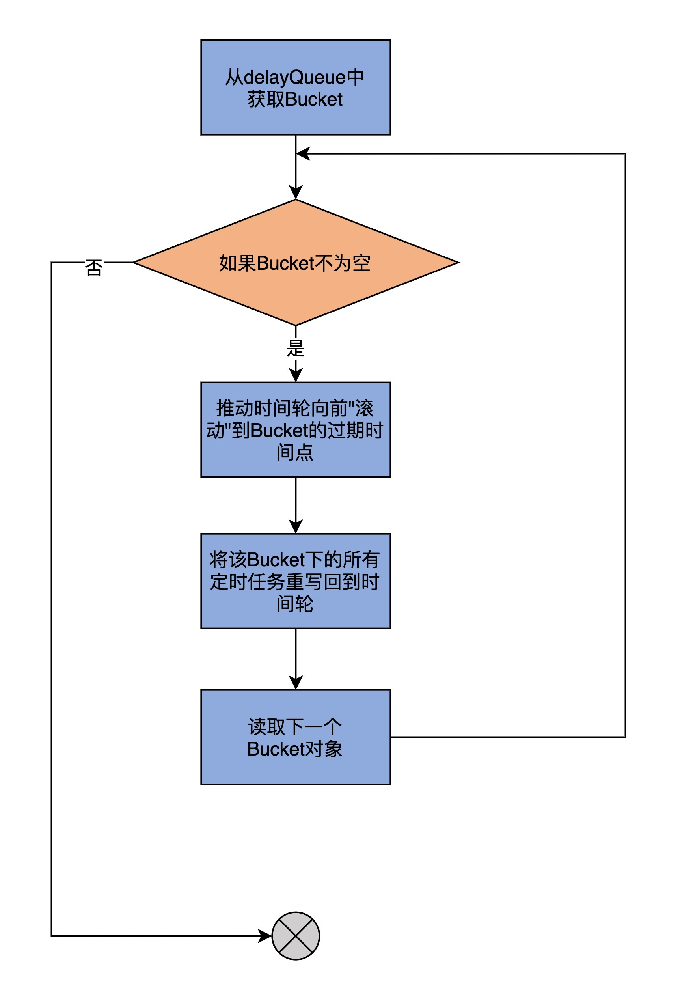
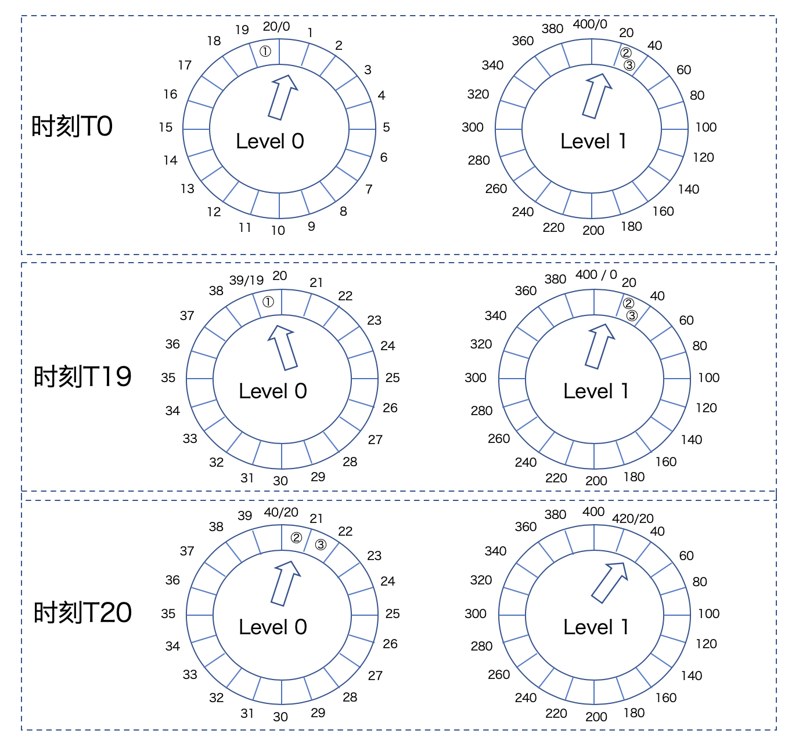
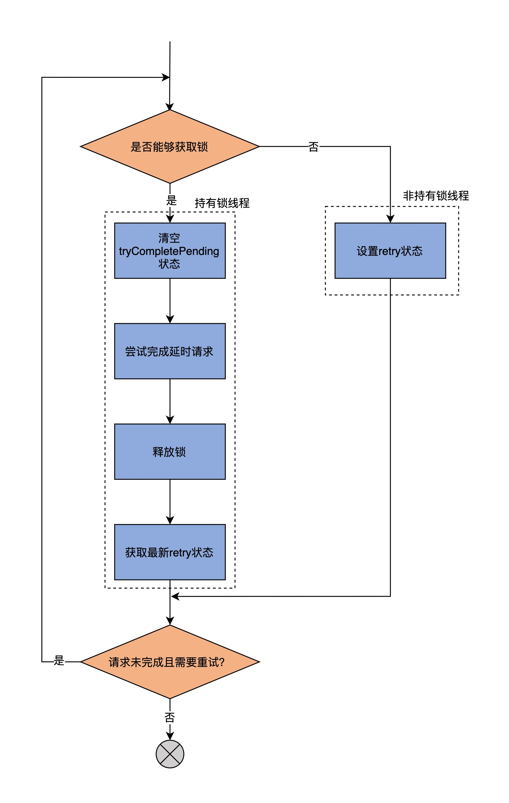

- 00 导读 构建Kafka工程和源码阅读环境、Scala语言热身.md.html
- 00 开篇词 阅读源码，逐渐成了职业进阶道路上的“必选项”.md.html
- 00 重磅加餐 带你快速入门Scala语言.md.html
- 01 日志段：保存消息文件的对象是怎么实现的？.md.html
- 02 日志（上）：日志究竟是如何加载日志段的？.md.html
- 03 日志（下）：彻底搞懂Log对象的常见操作.md.html
- 04 索引（上）：改进的二分查找算法在Kafka索引的应用.md.html
- 05 索引（下）：位移索引和时间戳索引的区别是什么？.md.html
- 06 请求通道：如何实现Kafka请求队列？.md.html
- 07 SocketServer（上）：Kafka到底是怎么应用NIO实现网络通信的？.md.html
- 08 SocketServer（中）：请求还要区分优先级？.md.html
- 09 SocketServer（下）：请求处理全流程源码分析.md.html
- 10 KafkaApis：Kafka最重要的源码入口，没有之一.md.html
- 11 Controller元数据：Controller都保存有哪些东西？有几种状态？.md.html
- 12 ControllerChannelManager：Controller如何管理请求发送？.md.html
- 13 ControllerEventManager：变身单线程后的Controller如何处理事件？.md.html
- 14 Controller选举是怎么实现的？.md.html
- 15 如何理解Controller在Kafka集群中的作用？.md.html
- 16 TopicDeletionManager： Topic是怎么被删除的？.md.html
- 17 ReplicaStateMachine：揭秘副本状态机实现原理.md.html
- 18 PartitionStateMachine：分区状态转换如何实现？.md.html
- 19 TimingWheel：探究Kafka定时器背后的高效时间轮算法.md.html
- 20 DelayedOperation：Broker是怎么延时处理请求的？.md.html
- 21 AbstractFetcherThread：拉取消息分几步？.md.html
- 22 ReplicaFetcherThread：Follower如何拉取Leader消息？.md.html
- 23 ReplicaManager（上）：必须要掌握的副本管理类定义和核心字段.md.html
- 24 ReplicaManager（中）：副本管理器是如何读写副本的？.md.html
- 25 ReplicaManager（下）：副本管理器是如何管理副本的？.md.html
- 26 MetadataCache：Broker是怎么异步更新元数据缓存的？.md.html
- 27 消费者组元数据（上）：消费者组都有哪些元数据？.md.html
- 28 消费者组元数据（下）：Kafka如何管理这些元数据？.md.html
- 29 GroupMetadataManager：组元数据管理器是个什么东西？.md.html
- 30 GroupMetadataManager：位移主题保存的只是位移吗？.md.html
- 31 GroupMetadataManager：查询位移时，不用读取位移主题？.md.html
- 32 GroupCoordinator：在Rebalance中，Coordinator如何处理成员入组？.md.html
- 33 GroupCoordinator：在Rebalance中，如何进行组同步？.md.html
- 特别放送（一）经典的Kafka学习资料有哪些？.md.html
- 特别放送（三）我是怎么度过日常一天的？.md.html
- 特别放送（二）一篇文章带你了解参与开源社区的全部流程.md.html
- 特别放送（五） Kafka 社区的重磅功能：移除 ZooKeeper 依赖.md.html
- 特别放送（四）20道经典的Kafka面试题详解.md.html
- 结束语 源码学习，我们才刚上路呢.md.html
- 捐赠
20 DelayedOperation：Broker是怎么延时处理请求的？
你好，我是胡夕。
上节课，我们学习了分层时间轮在Kafka中的实现。既然是分层时间轮，那就说明，源码中构造的时间轮是有多个层次的。每一层所表示的总时长，等于该层Bucket数乘以每个Bucket涵盖的时间范围。另外，该总时长自动成为下一层单个Bucket所覆盖的时间范围。
举个例子，目前，Kafka第1层的时间轮固定时长是20毫秒（interval），即有20个Bucket（wheelSize），每个Bucket涵盖1毫秒（tickMs）的时间范围。第2层的总时长是400毫秒，同样有20个Bucket，每个Bucket 20毫秒。依次类推，那么第3层的时间轮时长就是8秒，因为这一层单个Bucket的时长是400毫秒，共有20个Bucket。
基于这种设计，每个延迟请求需要根据自己的超时时间，来决定它要被保存于哪一层时间轮上。我们假设在t=0时创建了第1层的时间轮，那么，该层第1个Bucket保存的延迟请求就是介于[0，1）之间，第2个Bucket保存的是介于[1，2)之间的请求。现在，如果有两个延迟请求，超时时刻分别在18.5毫秒和123毫秒，那么，第1个请求就应该被保存在第1层的第19个Bucket（序号从1开始）中，而第2个请求，则应该被保存在第2层时间轮的第6个Bucket中。
这基本上就是Kafka中分层时间轮的实现原理。Kafka不断向前推动各个层级的时间轮的时钟，按照时间轮的滴答时长，陆续接触到Bucket下的各个延迟任务，从而实现了对请求的延迟处理。
但是，如果你仔细查看的话，就会发现，到目前为止，这套分层时间轮代码和Kafka概念并无直接的关联，比如分层时间轮里并不涉及主题、分区、副本这样的概念，也没有和Controller、副本管理器等Kafka组件进行直接交互。但实际上，延迟处理请求是Kafka的重要功能之一。你可能会问，到底是Kafka的哪部分源码负责创建和维护这套分层时间轮，并将它集成到整体框架中去的呢？答案就是接下来要介绍的两个类：Timer和SystemTimer。
Timer接口及SystemTimer
这两个类的源码位于utils.timer包下的Timer.scala文件。其中，Timer接口定义了管理延迟操作的方法，而SystemTimer是实现延迟操作的关键代码。后续在学习延迟请求类DelayedOperation时，我们就会发现，调用分层时间轮上的各类操作，都是通过SystemTimer类完成的。
Timer接口
接下来，我们就看下它们的源码。首先是Time接口类，代码如下：
trait Timer {
// 将给定的定时任务插入到时间轮上，等待后续延迟执行
def add(timerTask: TimerTask): Unit
// 向前推进时钟，执行已达过期时间的延迟任务
def advanceClock(timeoutMs: Long): Boolean
// 获取时间轮上总的定时任务数
def size: Int
// 关闭定时器
def shutdown(): Unit
}
该Timer接口定义了4个方法。
- add方法：将给定的定时任务插入到时间轮上，等待后续延迟执行。
- advanceClock方法：向前推进时钟，执行已达过期时间的延迟任务。
- size方法：获取当前总定时任务数。
- shutdown方法：关闭该定时器。
其中，最重要的两个方法是add和advanceClock，它们是完成延迟请求处理的关键步骤。接下来，我们结合Timer实现类SystemTimer的源码，重点分析这两个方法。
SystemTimer类
SystemTimer类是Timer接口的实现类。它是一个定时器类，封装了分层时间轮对象，为Purgatory提供延迟请求管理功能。所谓的Purgatory，就是保存延迟请求的缓冲区。也就是说，它保存的是因为不满足条件而无法完成，但是又没有超时的请求。
下面，我们从定义和方法两个维度来学习SystemTimer类。
定义
首先是该类的定义，代码如下：
class SystemTimer(executorName: String,
tickMs: Long = 1,
wheelSize: Int = 20,
startMs: Long = Time.SYSTEM.hiResClockMs) extends Timer {
// 单线程的线程池用于异步执行定时任务
private[this] val taskExecutor = Executors.newFixedThreadPool(1,
(runnable: Runnable) => KafkaThread.nonDaemon("executor-" + executorName, runnable))
// 延迟队列保存所有Bucket，即所有TimerTaskList对象
private[this] val delayQueue = new DelayQueue[TimerTaskList]()
// 总定时任务数
private[this] val taskCounter = new AtomicInteger(0)
// 时间轮对象
private[this] val timingWheel = new TimingWheel(
tickMs = tickMs,
wheelSize = wheelSize,
startMs = startMs,
taskCounter = taskCounter,
delayQueue
)
// 维护线程安全的读写锁
private[this] val readWriteLock = new ReentrantReadWriteLock()
private[this] val readLock = readWriteLock.readLock()
private[this] val writeLock = readWriteLock.writeLock()
......
}
每个SystemTimer类定义了4个原生字段，分别是executorName、tickMs、wheelSize和startMs。
tickMs和wheelSize是构建分层时间轮的基础，你一定要重点掌握。不过上节课我已经讲过了，而且我在开篇还用具体数字带你回顾了它们的用途，这里就不重复了。另外两个参数不太重要，你只需要知道它们的含义就行了。
- executorName：Purgatory的名字。Kafka中存在不同的Purgatory，比如专门处理生产者延迟请求的Produce缓冲区、处理消费者延迟请求的Fetch缓冲区等。这里的Produce和Fetch就是executorName。
- startMs：该SystemTimer定时器启动时间，单位是毫秒。
除了原生字段，SystemTimer类还定义了其他一些字段属性。我介绍3个比较重要的。这3个字段与时间轮都是强相关的。
- delayQueue字段。它保存了该定时器下管理的所有Bucket对象。因为是DelayQueue，所以只有在Bucket过期后，才能从该队列中获取到。SystemTimer类的advanceClock方法正是依靠了这个特性向前驱动时钟。关于这一点，一会儿我们详细说。
- timingWheel。TimingWheel是实现分层时间轮的类。SystemTimer类依靠它来操作分层时间轮。
- taskExecutor。它是单线程的线程池，用于异步执行提交的定时任务逻辑。
方法
说完了类定义与字段，我们看下SystemTimer类的方法。
该类总共定义了6个方法：add、addTimerTaskEntry、reinsert、advanceClock、size和shutdown。
其中，size方法计算的是给定Purgatory下的总延迟请求数，shutdown方法则是关闭前面说到的线程池，而addTimerTaskEntry方法则是将给定的TimerTaskEntry插入到时间轮中。如果该TimerTaskEntry表征的定时任务没有过期或被取消，方法还会将已经过期的定时任务提交给线程池，等待异步执行该定时任务。至于reinsert方法，它会调用addTimerTaskEntry重新将定时任务插入回时间轮。
其实，SystemTimer类最重要的方法是add和advanceClock方法，因为它们是真正对外提供服务的。我们先说add方法。add方法的作用，是将给定的定时任务插入到时间轮中进行管理。代码如下：
def add(timerTask: TimerTask): Unit = {
// 获取读锁。在没有线程持有写锁的前提下，
// 多个线程能够同时向时间轮添加定时任务
readLock.lock()
try {
// 调用addTimerTaskEntry执行插入逻辑
addTimerTaskEntry(new TimerTaskEntry(timerTask, timerTask.delayMs + Time.SYSTEM.hiResClockMs))
} finally {
// 释放读锁
readLock.unlock()
}
}
add方法就是调用addTimerTaskEntry方法执行插入动作。以下是addTimerTaskEntry的方法代码：
private def addTimerTaskEntry(timerTaskEntry: TimerTaskEntry): Unit = {
// 视timerTaskEntry状态决定执行什么逻辑：
// 1. 未过期未取消：添加到时间轮
// 2. 已取消：什么都不做
// 3. 已过期：提交到线程池，等待执行
if (!timingWheel.add(timerTaskEntry)) {
// 定时任务未取消，说明定时任务已过期
// 否则timingWheel.add方法应该返回True
if (!timerTaskEntry.cancelled)
taskExecutor.submit(timerTaskEntry.timerTask)
}
}
TimingWheel的add方法会在定时任务已取消或已过期时，返回False，否则，该方法会将定时任务添加到时间轮，然后返回True。因此，addTimerTaskEntry方法到底执行什么逻辑，取决于给定定时任务的状态：
- 如果该任务既未取消也未过期，那么，addTimerTaskEntry方法将其添加到时间轮；
- 如果该任务已取消，则该方法什么都不做，直接返回；
- 如果该任务已经过期，则提交到相应的线程池，等待后续执行。
另一个关键方法是advanceClock方法。顾名思义，它的作用是驱动时钟向前推进。我们看下代码：
def advanceClock(timeoutMs: Long): Boolean = {
// 获取delayQueue中下一个已过期的Bucket
var bucket = delayQueue.poll(
timeoutMs, TimeUnit.MILLISECONDS)
if (bucket != null) {
// 获取写锁
// 一旦有线程持有写锁，其他任何线程执行add或advanceClock方法时会阻塞
writeLock.lock()
try {
while (bucket != null) {
// 推动时间轮向前"滚动"到Bucket的过期时间点
timingWheel.advanceClock(bucket.getExpiration())
// 将该Bucket下的所有定时任务重写回到时间轮
bucket.flush(reinsert)
// 读取下一个Bucket对象
bucket = delayQueue.poll()
}
} finally {
// 释放写锁
writeLock.unlock()
}
true
} else {
false
}
}
由于代码逻辑比较复杂，我再画一张图来展示一下：

advanceClock方法要做的事情，就是遍历delayQueue中的所有Bucket，并将时间轮的时钟依次推进到它们的过期时间点，令它们过期。然后，再将这些Bucket下的所有定时任务全部重新插入回时间轮。
我用一张图来说明这个重新插入过程。

从这张图中，我们可以看到，在T0时刻，任务①存放在Level 0的时间轮上，而任务②和③存放在Level 1的时间轮上。此时，时钟推进到Level 0的第0个Bucket上，以及Level 1的第0个Bucket上。
当时间来到T19时刻，时钟也被推进到Level 0的第19个Bucket，任务①会被执行。但是，由于一层时间轮是20个Bucket，因此，T19时刻Level 0的时间轮尚未完整走完一圈，此时，Level 1的时间轮状态没有发生任何变化。
当T20时刻到达时，Level 0的时间轮已经执行完成，Level 1的时间轮执行了一次滴答，向前推进一格。此时，Kafka需要将任务②和③插入到Level 0的时间轮上，位置是第20个和第21个Bucket。这个将高层时间轮上的任务插入到低层时间轮的过程，是由advanceClock中的reinsert方法完成。
至于为什么要重新插入回低层次的时间轮，其实是因为，随着时钟的推进，当前时间逐渐逼近任务②和③的超时时间点。它们之间差值的缩小，足以让它们被放入到下一层的时间轮中。
总的来说，SystemTimer类实现了Timer接口的方法，它封装了底层的分层时间轮，为上层调用方提供了便捷的方法来操作时间轮。那么，它的上层调用方是谁呢？答案就是DelayedOperationPurgatory类。这就是我们建模Purgatory的地方。
不过，在了解DelayedOperationPurgatory之前，我们要先学习另一个重要的类：DelayedOperation。前者是一个泛型类，它的类型参数恰恰就是DelayedOperation。因此，我们不可能在不了解DelayedOperation的情况下，很好地掌握DelayedOperationPurgatory。
DelayedOperation类
这个类位于server包下的DelayedOperation.scala文件中。它是所有Kafka延迟请求类的抽象父类。我们依然从定义和方法这两个维度去剖析它。
定义
首先来看定义。代码如下：
abstract class DelayedOperation(override val delayMs: Long,
lockOpt: Option[Lock] = None)
extends TimerTask with Logging {
// 标识该延迟操作是否已经完成
private val completed = new AtomicBoolean(false)
// 防止多个线程同时检查操作是否可完成时发生锁竞争导致操作最终超时
private val tryCompletePending = new AtomicBoolean(false)
private[server] val lock: Lock = lockOpt.getOrElse(new ReentrantLock)
......
}
DelayedOperation类是一个抽象类，它的构造函数中只需要传入一个超时时间即可。这个超时时间通常是客户端发出请求的超时时间，也就是客户端参数request.timeout.ms的值。这个类实现了上节课学到的TimerTask接口，因此，作为一个建模延迟操作的类，它自动继承了TimerTask接口的cancel方法，支持延迟操作的取消，以及TimerTaskEntry的Getter和Setter方法，支持将延迟操作绑定到时间轮相应Bucket下的某个链表元素上。
除此之外，DelayedOperation类额外定义了两个字段：completed和tryCompletePending。
前者理解起来比较容易，它就是表征这个延迟操作是否完成的布尔变量。我重点解释一下tryCompletePending的作用。
这个参数是在1.1版本引入的。在此之前，只有completed参数。但是，这样就可能存在这样一个问题：当多个线程同时检查某个延迟操作是否满足完成条件时，如果其中一个线程持有了锁（也就是上面的lock字段），然后执行条件检查，会发现不满足完成条件。而与此同时，另一个线程执行检查时却发现条件满足了，但是这个线程又没有拿到锁，此时，该延迟操作将永远不会有再次被检查的机会，会导致最终超时。
加入tryCompletePending字段目的，就是确保拿到锁的线程有机会再次检查条件是否已经满足。具体是怎么实现的呢？下面讲到maybeTryComplete方法时，我会再带你进行深入的分析。
关于DelayedOperation类的定义，你掌握到这个程度就可以了，重点是学习这些字段是如何在方法中发挥作用的。
方法
DelayedOperation类有7个方法。我先介绍下它们的作用，这样你在读源码时就可以心中有数。
- forceComplete：强制完成延迟操作，不管它是否满足完成条件。每当操作满足完成条件或已经过期了，就需要调用该方法完成该操作。
- isCompleted：检查延迟操作是否已经完成。源码使用这个方法来决定后续如何处理该操作。比如如果操作已经完成了，那么通常需要取消该操作。
- onExpiration：强制完成之后执行的过期逻辑回调方法。只有真正完成操作的那个线程才有资格调用这个方法。
- onComplete：完成延迟操作所需的处理逻辑。这个方法只会在forceComplete方法中被调用。
- tryComplete：尝试完成延迟操作的顶层方法，内部会调用forceComplete方法。
- maybeTryComplete：线程安全版本的tryComplete方法。这个方法其实是社区后来才加入的，不过已经慢慢地取代了tryComplete，现在外部代码调用的都是这个方法了。
- run：调用延迟操作超时后的过期逻辑，也就是组合调用forceComplete + onExpiration。
我们说过，DelayedOperation是抽象类，对于不同类型的延时请求，onExpiration、onComplete和tryComplete的处理逻辑也各不相同，因此需要子类来实现它们。
其他方法的代码大多短小精悍，你一看就能明白，我就不做过多解释了。我重点说下maybeTryComplete方法。毕竟，这是社区为了规避因多线程访问产生锁争用导致线程阻塞，从而引发请求超时问题而做的努力。先看方法代码：
private[server] def maybeTryComplete(): Boolean = {
var retry = false // 是否需要重试
var done = false // 延迟操作是否已完成
do {
if (lock.tryLock()) { // 尝试获取锁对象
try {
tryCompletePending.set(false)
done = tryComplete()
} finally {
lock.unlock()
}
// 运行到这里的线程持有锁，其他线程只能运行else分支的代码
// 如果其他线程将maybeTryComplete设置为true，那么retry=true
// 这就相当于其他线程给了本线程重试的机会
retry = tryCompletePending.get()
} else {
// 运行到这里的线程没有拿到锁
// 设置tryCompletePending=true给持有锁的线程一个重试的机会
retry = !tryCompletePending.getAndSet(true)
}
} while (!isCompleted && retry)
done
}
为了方便你理解，我画了一张流程图说明它的逻辑：

从图中可以看出，这个方法可能会被多个线程同时访问，只是不同线程会走不同的代码分支，分叉点就在尝试获取锁的if语句。
如果拿到锁对象，就依次执行清空tryCompletePending状态、完成延迟请求、释放锁以及读取最新retry状态的动作。未拿到锁的线程，就只能设置tryCompletePending状态，来间接影响retry值，从而给获取到锁的线程一个重试的机会。这里的重试，是通过do…while循环的方式实现的。
好了，DelayedOperation类我们就说到这里。除了这些公共方法，你最好结合一两个具体子类的方法实现，体会下具体延迟请求类是如何实现tryComplete方法的。我推荐你从DelayedProduce类的tryComplete方法开始。
我们之前总说，acks=all的PRODUCE请求很容易成为延迟请求，因为它必须等待所有的ISR副本全部同步消息之后才能完成，你可以顺着这个思路，研究下DelayedProduce的tryComplete方法是如何实现的。
DelayedOperationPurgatory类
接下来，我们补上延迟请求模块的最后一块“拼图”：DelayedOperationPurgatory类的源码分析。
该类是实现Purgatory的地方。从代码结构上看，它是一个Scala伴生对象。也就是说，源码文件同时定义了DelayedOperationPurgatory Object和Class。Object中仅仅定义了apply工厂方法和一个名为Shards的字段，这个字段是DelayedOperationPurgatory监控列表的数组长度信息。因此，我们还是重点学习DelayedOperationPurgatory Class的源码。
前面说过，DelayedOperationPurgatory类是一个泛型类，它的参数类型是DelayedOperation的具体子类。因此，通常情况下，每一类延迟请求都对应于一个DelayedOperationPurgatory实例。这些实例一般都保存在上层的管理器中。比如，与消费者组相关的心跳请求、加入组请求的Purgatory实例，就保存在GroupCoordinator组件中，而与生产者相关的PRODUCE请求的Purgatory实例，被保存在分区对象或副本状态机中。
定义
至于怎么学，还是老规矩，我们先从定义开始。代码如下：
final class DelayedOperationPurgatory[T <: DelayedOperation](
purgatoryName: String,
timeoutTimer: Timer,
brokerId: Int = 0,
purgeInterval: Int = 1000,
reaperEnabled: Boolean = true,
timerEnabled: Boolean = true) extends Logging with KafkaMetricsGroup {
......
}
定义中有6个字段。其中，很多字段都有默认参数，比如，最后两个参数分别表示是否启动删除线程，以及是否启用分层时间轮。现在，源码中所有类型的Purgatory实例都是默认启动的，因此无需特别留意它们。
purgeInterval这个参数用于控制删除线程移除Bucket中的过期延迟请求的频率，在绝大部分情况下，都是1秒一次。当然，对于生产者、消费者以及删除消息的AdminClient而言，Kafka分别定义了专属的参数允许你调整这个频率。比如，生产者参数producer.purgatory.purge.interval.requests，就是做这个用的。
事实上，需要传入的参数一般只有两个：purgatoryName和brokerId，它们分别表示这个Purgatory的名字和Broker的序号。
而timeoutTimer，就是我们前面讲过的SystemTimer实例，我就不重复解释了。
Wathcers和WatcherList
DelayedOperationPurgatory还定义了两个内置类，分别是Watchers和WatcherList。
Watchers是基于Key的一个延迟请求的监控链表。它的主体代码如下：
private class Watchers(val key: Any) {
private[this] val operations =
new ConcurrentLinkedQueue[T]()
// 其他方法......
}
每个Watchers实例都定义了一个延迟请求链表，而这里的Key可以是任何类型，比如表示消费者组的字符串类型、表示主题分区的TopicPartitionOperationKey类型。你不用穷尽这里所有的Key类型，你只需要了解，Watchers是一个通用的延迟请求链表，就行了。Kafka利用它来监控保存其中的延迟请求的可完成状态。
既然Watchers主要的数据结构是链表，那么，它的所有方法本质上就是一个链表操作。比如，tryCompleteWatched方法会遍历整个链表，并尝试完成其中的延迟请求。再比如，cancel方法也是遍历链表，再取消掉里面的延迟请求。至于watch方法，则是将延迟请求加入到链表中。
说完了Watchers，我们看下WatcherList类。它非常短小精悍，完整代码如下：
private class WatcherList {
// 定义一组按照Key分组的Watchers对象
val watchersByKey = new Pool[Any, Watchers](Some((key: Any) => new Watchers(key)))
val watchersLock = new ReentrantLock()
// 返回所有Watchers对象
def allWatchers = {
watchersByKey.values
}
}
WatcherList最重要的字段是watchersByKey。它是一个Pool，Pool就是Kafka定义的池对象，它本质上就是一个ConcurrentHashMap。watchersByKey的Key可以是任何类型，而Value就是Key对应类型的一组Watchers对象。
说完了DelayedOperationPurgatory类的两个内部类Watchers和WatcherList，我们可以开始学习该类的两个重要方法：tryCompleteElseWatch和checkAndComplete方法。
前者的作用是检查操作是否能够完成，如果不能的话，就把它加入到对应Key所在的WatcherList中。以下是方法代码：
def tryCompleteElseWatch(operation: T, watchKeys: Seq[Any]): Boolean = {
assert(watchKeys.nonEmpty, "The watch key list can't be empty")
var isCompletedByMe = operation.tryComplete()
// 如果该延迟请求是由本线程完成的，直接返回true即可
if (isCompletedByMe)
return true
var watchCreated = false
// 遍历所有要监控的Key
for(key <- watchKeys) {
// 再次查看请求的完成状态，如果已经完成，就说明是被其他线程完成的，返回false
if (operation.isCompleted)
return false
// 否则，将该operation加入到Key所在的WatcherList
watchForOperation(key, operation)
// 设置watchCreated标记，表明该任务已经被加入到WatcherList
if (!watchCreated) {
watchCreated = true
// 更新Purgatory中总请求数
estimatedTotalOperations.incrementAndGet()
}
}
// 再次尝试完成该延迟请求
isCompletedByMe = operation.maybeTryComplete()
if (isCompletedByMe)
return true
// 如果依然不能完成此请求，将其加入到过期队列
if (!operation.isCompleted) {
if (timerEnabled)
timeoutTimer.add(operation)
if (operation.isCompleted) {
operation.cancel()
}
}
false
}
该方法的名字折射出了它要做的事情：先尝试完成请求，如果无法完成，则把它加入到WatcherList中进行监控。具体来说，tryCompleteElseWatch调用tryComplete方法，尝试完成延迟请求，如果返回结果是true，就说明执行tryCompleteElseWatch方法的线程正常地完成了该延迟请求，也就不需要再添加到WatcherList了，直接返回true就行了。
否则的话，代码会遍历所有要监控的Key，再次查看请求的完成状态。如果已经完成，就说明是被其他线程完成的，返回false；如果依然无法完成，则将该请求加入到Key所在的WatcherList中，等待后续完成。同时，设置watchCreated标记，表明该任务已经被加入到WatcherList以及更新Purgatory中总请求数。
待遍历完所有Key之后，源码会再次尝试完成该延迟请求，如果完成了，就返回true，否则就取消该请求，然后将其加入到过期队列，最后返回false。
总的来看，你要掌握这个方法要做的两个事情：
- 先尝试完成延迟请求；
- 如果不行，就加入到WatcherList，等待后面再试。
那么，代码是在哪里进行重试的呢？这就需要用到第2个方法checkAndComplete了。
该方法会检查给定Key所在的WatcherList中的延迟请求是否满足完成条件，如果是的话，则结束掉它们。我们一起看下源码：
def checkAndComplete(key: Any): Int = {
// 获取给定Key的WatcherList
val wl = watcherList(key)
// 获取WatcherList中Key对应的Watchers对象实例
val watchers = inLock(wl.watchersLock) { wl.watchersByKey.get(key) }
// 尝试完成满足完成条件的延迟请求并返回成功完成的请求数
val numCompleted = if (watchers == null)
0
else
watchers.tryCompleteWatched()
debug(s"Request key $key unblocked $numCompleted $purgatoryName operations")
numCompleted
}
代码很简单，就是根据给定Key，获取对应的WatcherList对象，以及它下面保存的Watchers对象实例，然后尝试完成满足完成条件的延迟请求，并返回成功完成的请求数。
可见，非常重要的步骤就是调用Watchers的tryCompleteWatched方法，去尝试完成那些已满足完成条件的延迟请求。
总结
今天，我们重点学习了分层时间轮的上层组件，包括Timer接口及其实现类SystemTimer、DelayedOperation类以及DelayedOperationPurgatory类。你基本上可以认为，它们是逐级被调用的关系，即DelayedOperation调用SystemTimer类，DelayedOperationPurgatory管理DelayedOperation。它们共同实现了Broker端对于延迟请求的处理，基本思想就是，能立即完成的请求马上完成，否则就放入到名为Purgatory的缓冲区中。后续，DelayedOperationPurgatory类的方法会自动地处理这些延迟请求。
我们来回顾一下重点。
- SystemTimer类：Kafka定义的定时器类，封装了底层分层时间轮，实现了时间轮Bucket的管理以及时钟向前推进功能。它是实现延迟请求后续被自动处理的基础。
- DelayedOperation类：延迟请求的高阶抽象类，提供了完成请求以及请求完成和过期后的回调逻辑实现。
- DelayedOperationPurgatory类：Purgatory实现类，该类定义了WatcherList对象以及对WatcherList的操作方法，而WatcherList是实现延迟请求后续自动处理的关键数据结构。
总的来说，延迟请求模块属于Kafka的冷门组件。毕竟，大部分的请求还是能够被立即处理的。了解这部分模块的最大意义在于，你可以学习Kafka这个分布式系统是如何异步循环操作和管理定时任务的。这个功能是所有分布式系统都要面临的课题，因此，弄明白了这部分的原理和代码实现，后续我们在自行设计类似的功能模块时，就非常容易了。
课后讨论
DelayedOperationPurgatory类中定义了一个Reaper线程，用于将已过期的延迟请求从数据结构中移除掉。这实际上是由DelayedOperationPurgatory的advanceClock方法完成的。它里面有这样一句：
val purged = watcherLists.foldLeft(0) {
case (sum, watcherList) => sum + watcherList.allWatchers.map(_.purgeCompleted()).sum
}
你觉得这个语句是做什么用的？
欢迎在留言区写下你的思考和答案，跟我交流讨论，也欢迎你把今天的内容分享给你的朋友。
© 2019 - 2023 Liangliang Lee. Powered by gin and hexo-theme-book.